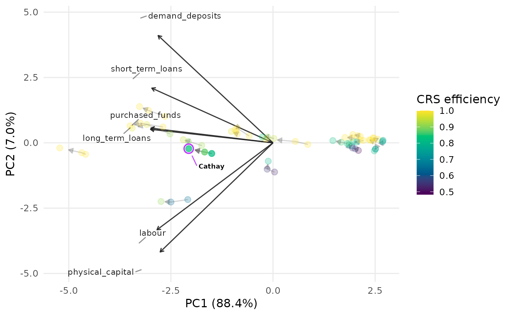

A balanced panel (long-format) data envelopment analysis (DEA) dataset
describing 22 Taiwanese commercial banks over three years (2009-2011) by
three inputs and three outputs. It is the worked example of Kao and Liu
(2014) on multi-period efficiency measurement, and is the example dataset for
plot_panel_io_biplot.
Format
A data frame with 66 rows (22 banks \(\times\) 3 years) and 8 variables:
- DMU
Bank name (the decision-making unit label).
- Year
Period: 2009, 2010 or 2011.
- labour
Input 1 (I1): labour.
- physical_capital
Input 2 (I2): physical capital.
- purchased_funds
Input 3 (I3): purchased funds.
- demand_deposits
Output 1 (O1): demand deposits.
- short_term_loans
Output 2 (O2): short-term loans.
- long_term_loans
Output 3 (O3): medium- and long-term loans.
Source
Kao, C. and Liu, S.-T. (2014). Multi-period efficiency measurement in data envelopment analysis: The case of Taiwanese commercial banks. Omega, 47, 90-98. doi:10.1016/j.omega.2013.09.001
Details
Columns 3-5 are inputs (I1-I3) and columns 6-8 are outputs (O1-O3);
DMU and Year identify each observation. The input/output
columns are not i_/o_ prefixed, so pass them by position
(e.g. inputs = 3:5, outputs = 6:8) or by name to
plot_panel_io_biplot (see Examples).
Examples
plot_panel_io_biplot(
taiwanese_banks, id = "DMU", period = "Year",
inputs = 3:5, outputs = 6:8, labels = "Cathay"
)
